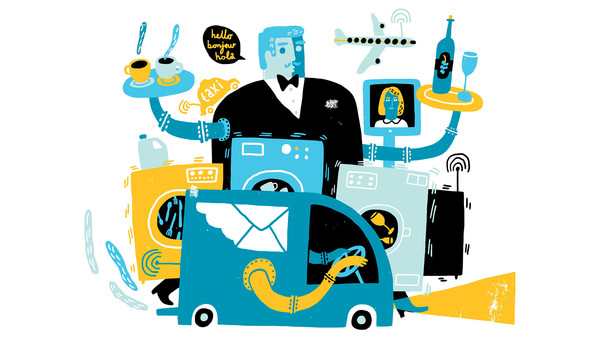

当过卡车司机的小罗伊•哈罗德•谢勒(Roy Harold Scherer Jr)，经过长期奋斗，最终登上了自己选择的职业的巅峰。他化名罗克•赫德森(Rock Hudson)，成为家喻户晓的电影明星。美国计算机公司戴尔(Dell)创始人迈克尔•戴尔(Michael Dell)在踏入科技业之前，曾在中餐馆和墨西哥餐厅洗过盘子、当过服务生。
这些枯燥乏味的工作，曾经使那些雄心勃勃的年轻人在成功之前得以赚钱糊口。对其他人而言，这是他们的全职工作。但这些低端、不需要多少技能的工作越来越面临被即将到来的机器人时代淘汰的危险。洗盘子很久之前就实现了自动化，而等到无人驾驶汽车大量上市之时，卡车司机的工作可能也会被历史淘汰。
俄罗斯、文莱、柬埔寨、老挝和俄罗斯几国的政府除了都对参与式民主没兴趣之外，还有什么共同之处呢？ 中国政府宣布上述政府最近都站出来支持其在南中国海的立场，称它们支持自己的观点，包括海上纠纷应通过双边协商解决，以及菲律宾对中国的领土主张提出的仲裁案是不合法的。 此事绝非偶然。菲律宾提出的仲裁案预计将在数月内得出裁决。北京方面正努力说服其他国家相信，海牙仲裁法庭无权对中国的主张作出裁决。 近几周来，深谋远虑的中国外长王毅一直以充沛的精力拜访同行，访问了文莱、柬埔寨和老挝，意图分化东南亚对中国的态度。
FT英文网站（ft.com）本月出版的特别报道《互联商业》(Connected Business)提出了一个问题：劳动者需要做什么，才能让自己的职业不被机器人取代？但当下的科技革命意味着什么——尤其是对那些被认为只需较低阶技能的行业里的雇主和工人而言——仍有讨论的余地。
另一个工作机会面临淘汰风险的行业是交通运输业。位于伦敦的威斯敏斯特大学(Westminster university)高级讲师蕾切尔•奥尔德雷德(Rachel Aldred)表示，无人驾驶巴士可以造福巴士公司员工和乘客。先前在福利方面的研究发现，驾驶巴士是一项充满压力的工作，而且对身体健康有害，因为驾驶员需要久坐。巴士售票员反倒是一个更有益于健康、压力不那么大的职业。